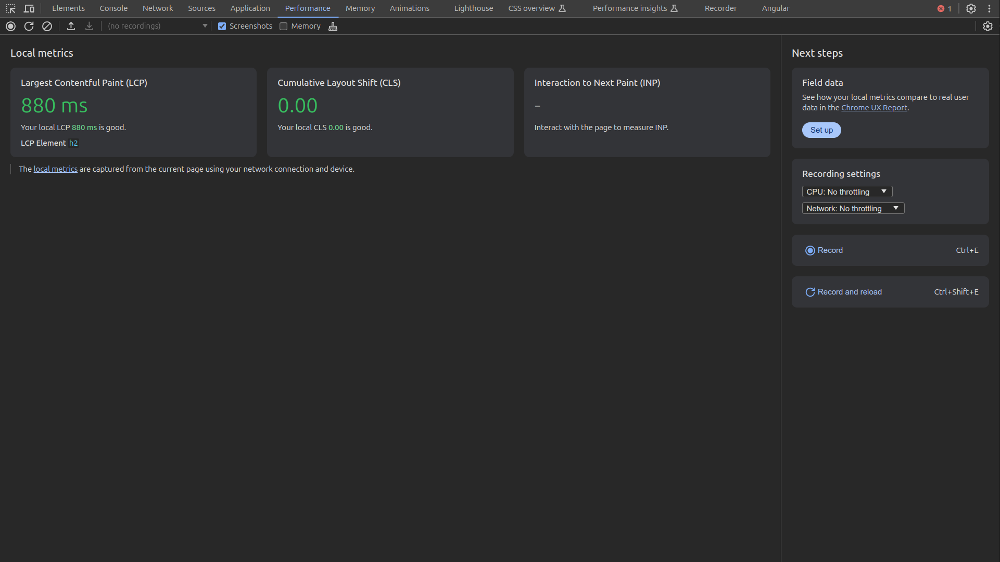

Семь раз отмерь, один раз оптимизируй
Денис Русаков
Семь раз отмерь, один раз оптимизируй
Денис Русаков
Птица из новой Гвинеи
Сказание о необычной пташке зародилось еще в стародавние времена. Наши предки тогда верили в Перуна – бога
грома и справедливости. Иногда он являлся в образе Жар-птицы. По другим легендам, она была символом бессмертия
и богатства, поэтому добыть себе перо из ее хвоста считалось настоящим счастьем
Перо - это производительность, которую нам иногда необходимо достичь/поймать?
Преждевременная оптимизация — корень всех бед
Дональд Кнут
Какой план?
Теория
Практика
(набор приемов/советов)
Выводы
В теории подведу через некоторые истории и кейсы к сути темы
V8 — движок с открытым исходным кодом, написан на C++, его разработкой занимается Google.
Движок JS — специализированная программа, обрабатывающая JS, в частности, в браузерах.
Почему был создан движок V8? Движок с открытым кодом V8 был создан компанией Google, он написан на C++. Движок
используется в браузере Google Chrome. Кроме того, что отличает V8 от других движков, он применяется в
популярной серверной среде Node.js.
Какие движки существуют?
V8
SpiderMonkey
Chakra / ChakraCore
Nitro
Rhino
JerryScript
и другие
V8 - это основной движок в Node.js, как и во всех Chrome Based браузерах
Всеми нелюбимая Chakra, которая находится в Internet Explorer. Она даже работает не с JavaScript, а с Jscript
— есть такое подмножество.
Современные Chakra и ChakraCore, которые работают в Edge;
SpiderMonkey в FireFox;
JavaScriptCore в WebKit. Также он используется в React Native. Если у вас RN-приложение под Android, то оно
так же исполняется на JavaScriptCore — движок идёт в комплекте с приложением.
Rhino и Nashorn — это движки, которые используются в Java. С их помощью там тоже можно исполнять JavaScript
JerryScript — для встраиваемых устройств;
О двух компиляторах, которые использовались в V8 Внутреннее устройство V8 изменилось с выходом версии 5.9,
которая появилась совсем недавно. До этого же он использовал два компилятора: full-codegen — простой и очень
быстрый компилятор, который выдаёт сравнительно медленный машинный код. Crankshaft — более сложный
оптимизирующий JIT-компилятор, который генерирует хорошо оптимизированный код. Внутри движка используются
несколько потоков: Главный поток, который занимается тем, что от него можно ожидать: читает исходный JS-код,
компилирует его и выполняет. Поток компиляции, который занимается оптимизацией кода в то время, когда
выполняется главный поток. Поток профилировщика, который сообщает системе о том, в каких методах программа
тратит больше всего времени, как результат, Crankshaft может эти методы оптимизировать. Несколько потоков,
которые поддерживают механизм сборки мусора. При первом исполнении JS-кода V8 задействует компилятор
full-codegen, который напрямую, без каких-либо дополнительных трансформаций, транслирует разобранный им
JavaScript-код в машинный код. Это позволяет очень быстро приступить к выполнению машинного кода. Обратите
внимание на то, что V8 не использует промежуточное представление программы в виде байт-кода, таким образом,
устраняя необходимость в интерпретаторе. После того, как код какое-то время поработает, поток профилировщика
соберёт достаточно данных для того, чтобы система могла понять, какие методы нужно оптимизировать. Далее, в
другом потоке, начинается оптимизация с помощью Crankshaft. Он преобразует абстрактное синтаксическое дерево
JavaScript в высокоуровневое представление, использующее модель единственного статического присваивания
(static single-assignment, SSA). Это представление называется Hydrogen. Затем Crankshaft пытается
оптимизировать граф потока управления Hydrogen. Большинство оптимизаций выполняется на этом уровне.
Как устроен V8 ?
В движке V8 нет интерпретатров, но существует 2 типа компиляторов - общий и оптимизирующий. Это привод к тмоу,
что JS всегда копилируется и заускается так же как и машинный код. Означает ли это, что код работает быстро?
Нет, Сама по себе компиляция не ускоряет работу кода. Она позволяет избежать накалыднх расходов, вызваных
работй интерпертаора, но неоптимизированный код убедт рабоатт медленно.
Через скрытые классы V8 идентифицирует обьектыю
когда вы создаете новый обьект движок создаст для него новый скрытый класс. Затем если вы измените тот же
обьект добавив новое свойцство мезанизм создаст новый скрытый класс со всеми свойствам из предыдщуего клкасс и
включит новое свойство
Мономофризм что у обьектов одинакоыве ключи без олтичий
Мегаморфизм тут обьекты совершенно разные и их нельзя сравнивать
Полиморфизм у обьектов общая струкутура но меняются небольшие отличия
Чем измерять?
Необходимо ответить на вопрос
Я не буду разбирать кейсы, а расскажу о возможностях и вы сами попробуете применить их на своих проектах
Java Script (клин клином)

(devtools-perf-features)
Если вы профилируете в браузере, убедитесь, что вы используете чистый и пустой профиль браузера. Я даже
использую для этого отдельный браузер. Если вы профилируете и у вас включены расширения браузера, они могут
испортить измерения. React devtools в частности существенно повлияют на результаты, код рендеринга может
выглядеть медленнее, чем он есть на самом делев зеркаледля ваших пользователей. Различные движки будут
оптимизировать определенные шаблоны лучше или хуже других. Вам следует провести бенчмаркинг для движков,
которые имеют отношение к вам, и расставить приоритеты, какой из них важнее. Вот реальный пример в Babel, где
улучшение V8 означает снижение производительности JSC. https://github.com/babel/babel/pull/16357 11.2
Сомневаетесь в своих результатах Если вы только что оптимизировали функцию, и теперь она работает в 100 раз
быстрее, усомнитесь в ней. Попробуйте опровергнуть свои результаты, попробуйте ее в режиме производства,
забросайте ее всякой всячиной. Аналогично, усомнитесь и в своих инструментах. Сам факт наблюдения за
бенчмарком с помощью devtools может изменить ее поведение.
Tree shaking
===
Javascript позволяет легко скрыть реальную стоимость сравнения строк. Если вам нужно сравнить строки в C, вы
бы использовали функцию strcmp(a, b). Javascript использует ===вместо этого , поэтому вы не видите strcmp. Но
он есть, и сравнение строк обычно (но не всегда) требует сравнения каждого символа в строке с символами в
другой строке; сравнение строк — это O(n). Один из распространенных шаблонов JavaScript, которого следует
избегать, — это строки как перечисления. Но с появлением TypeScript этого должно быть легко избежать,
поскольку перечисления по умолчанию являются целыми числами.
Процентные результаты представляют собой количество операций, выполненных в течение 1 с, деленное на
количество операций в случае с наивысшей оценкой. Чем выше, тем лучше.
Как видите, разница может быть существенной. Разница не обязательно связана со strcmpстоимостью, поскольку
движки иногда могут использовать пул строк и сравнивать по ссылке, но она также связана с тем, что целые числа
обычно передаются по значению в движках JS, тогда как строки всегда передаются как указатели, а доступ к
памяти является дорогостоящим (см. раздел 5). В коде с большим количеством строк это может иметь огромное
влияние. В качестве примера из реальной жизни, мне удалось заставить этот парсер JSON5 javascript работать в 2
раза быстрее *, просто заменив строковые константы числами. *К сожалению, он не был объединен, но таков
принцип работы с открытым исходным кодом.
// #1
enum Position {
TOP = 'TOP',
BOTTOM = 'BOTTOM',
}
// #2
enum Position {
TOP, // = 0
BOTTOM, // = 1
}
let _ = 0;
for (let i = 0; i < 1000000; i++) {
let current = i % 2 === 0 ? Position.TOP : Position.BOTTOM;
if (current === Position.TOP) {
_ += 1;
}
}
Избегайте разных форм
Движки Javascript пытаются оптимизировать код, предполагая, что объекты имеют определенную форму, и что
функции будут получать объекты той же формы. Это позволяет им хранить ключи формы один раз для всех объектов
этой формы, а значения — в отдельном плоском массиве. Чтобы представить это в javascript:
Я использовал слово «форма» для описания этой концепции, но имейте в виду, что вы также можете встретить
термины «скрытый класс» или «карта» для ее описания, в зависимости от движка.
Например, если во время выполнения следующая функция получает два объекта с формой { x: number, y: number },
движок предположит, что будущие объекты будут иметь такую же форму, и сгенерирует машинный код,
оптимизированный для этой формы.
Если вместо этого передать объект не с формой, { x, y }а с формой { y, x }, движку нужно будет отменить свое
предположение, и функция внезапно станет значительно медленнее. Я собираюсь ограничить свое объяснение здесь,
потому что вам следует прочитать превосходный пост от mraleph, если вы хотите больше подробностей, но я
собираюсь подчеркнуть, что V8, в частности, имеет 3 режима для доступа, которые являются: мономорфный (1
форма), полиморфный (2-4 формы) и мегаморфный (5+ форм). Допустим, вы действительно хотите оставаться
мономорфным, потому что замедление радикально:
Движки обычно могут кодировать целые числа как значения. Например, V8 представляет значения в 32 битах, причем
целые числа представляют собой компактные значения Smi (SMall Integer), но числа с плавающей точкой и большие
целые числа передаются как указатели, как строки и объекты. JSC использует 64-битное кодирование, двойное
тегирование , чтобы передавать все числа по значению, как это делает SpiderMonkey, а остальное передается как
указатели.
https://github.com/facebook/react/pull/28569
Что, черт возьми, мне с этим делать? Легче сказать, чем сделать, но: создайте все свои объекты с одинаковой
формой . Даже что-то столь тривиальное, как написание свойств компонента React в другом порядке, может вызвать
это . Например, вот простые случаи, которые я нашел в кодовой базе React, но у них уже был случай с гораздо
более сильным влиянием той же проблемы несколько лет назад, потому что они инициализировали объект целым
числом, а затем сохраняли число с плавающей точкой. Да, изменение типа также меняет форму. Да, есть целые и
плавающие типы, скрытые за number. Разберитесь с этим.
// Вводные
const objects = [
{
name: 'Анатолий',
age: 36,
},
{
name: 'Иннокентий',
age: 42
},
];
const shape = [
{ name: 'name', type: 'string' },
{ name: 'age', type: 'integer' },
];
const objects = [
['Анатолий', 36],
['Иннокентий', 42],
];
Например, если во время выполнения следующая функция получает два объекта с формой { x: number, y: number },
движок предположит, что будущие объекты будут иметь такую же форму, и сгенерирует машинный код,
оптимизированный для этой формы.
Если вместо этого передать объект не с формой, { x, y }а с формой { y, x }, движку нужно будет отменить свое
предположение, и функция внезапно станет значительно медленнее. Я собираюсь ограничить свое объяснение здесь,
потому что вам следует прочитать превосходный пост от mraleph, если вы хотите больше подробностей, но я
собираюсь подчеркнуть, что V8, в частности, имеет 3 режима для доступа, которые являются: мономорфный (1
форма), полиморфный (2-4 формы) и мегаморфный (5+ форм). Допустим, вы действительно хотите оставаться
мономорфным, потому что замедление радикально:
function add(a, b) {
return {
x: a.x + b.x,
y: a.y + b.y
}
}
Например, если во время выполнения следующая функция получает два объекта с формой { x: number, y: number },
движок предположит, что будущие объекты будут иметь такую же форму, и сгенерирует машинный код,
оптимизированный для этой формы.
Если вместо этого передать объект не с формой, { x, y }а с формой { y, x }, движку нужно будет отменить свое
предположение, и функция внезапно станет значительно медленнее. Я собираюсь ограничить свое объяснение здесь,
потому что вам следует прочитать превосходный пост от mraleph, если вы хотите больше подробностей, но я
собираюсь подчеркнуть, что V8, в частности, имеет 3 режима для доступа, которые являются: мономорфный (1
форма), полиморфный (2-4 формы) и мегаморфный (5+ форм). Допустим, вы действительно хотите оставаться
мономорфным, потому что замедление радикально:
// Вводные
let _ = 0;
// Monomorphic
const o1 = { a: 1, b: _, c: _, d: _ };
const o2 = { a: 1, b: _, c: _, d: _ };
const o3 = { a: 1, b: _, c: _, d: _ };
const o4 = { a: 1, b: _, c: _, d: _ };
// Polymorphic
const o1 = { a: 1, b: _, c: _, d: _ };
const o2 = { a: 1, b: _, c: _, d: _ };
const o3 = { a: 1, b: _, c: _, d: _ };
const o4 = { a: 1, b: _, c: _, d: _ };
// Megamorphic
const o1 = { a: 1, b: _, c: _, d: _ };
const o2 = { b: _, a: 1, c: _, d: _ };
const o3 = { b: _, c: _, a: 1, d: _ };
const o4 = { b: _, c: _, d: _, a: 1 };
monomorphism
function add(a1, b1) {
return a1.a + a1.b + a1.c + a1.d +
b1.a + b1.b + b1.c + b1.d;
}
let result = 0;
for (let i = 0; i < 1000000; i++) {
result += add(o1, o2);
result += add(o3, o4);
}
[...] {...}
Избегайте методов
// Вводные
const numbers = Array.from({ length: 10_000 }).map(() => Math.random());
// 1. functional
const result =
numbers
.map(n => Math.round(n * 10))
.filter(n => n % 2 === 0)
.reduce((a, n) => a + n, 0);
// 2. imperative
let result = 0;
for (let i = 0; i < numbers.length; i++) {
let n = Math.round(numbers[i] * 10);
if (n % 2 !== 0) continue;
result = result + n;
}
Я люблю функциональное программирование так же, как и все остальные, но если вы не работаете с
Haskell/OCaml/Rust, где функциональный код компилируется в эффективный машинный код, то функциональное
программирование всегда будет медленнее императивного.
Проблема с этими методами заключается в следующем:
Им нужно сделать полную копию массива, и эти копии позже должны быть освобождены сборщиком мусора. Мы более
подробно рассмотрим вопросы ввода-вывода памяти в разделе 5.
Они выполняют цикл N раз для N операций, тогда как for цикл допускает выполнение цикла один раз.
Методы объектов, такие как Object.values(), Object.keys()и Object.entries()страдают от похожих проблем, так
как они также выделяют больше данных, а доступ к памяти является корнем всех проблем с производительностью.
Нет, правда, я клянусь, я покажу вам в разделе 5.
Используйте eval
Некоторые шаблоны javascript трудно оптимизировать для движков, и с помощью использования eval()или его
производных вы можете заставить эти шаблоны исчезнуть. В этом примере мы можем наблюдать, как использование
eval()позволяет избежать затрат на создание объекта с динамическим ключом объекта:
Другим хорошим вариантом использования evalможет быть компиляция функции предиката фильтра, где вы
отбрасываете ветви, которые, как вы знаете, никогда не будут выполнены. В общем, любая функция, которая будет
запущена в очень горячем цикле, является хорошим кандидатом для такого рода оптимизации.
Очевидно, что обычные предупреждения eval()применимы: не доверяйте пользовательскому вводу, очищайте все, что
передается в eval()'d-код, и не создавайте никаких возможностей XSS. Также обратите внимание, что некоторые
среды не разрешают доступ к eval(), например, страницы браузера с CSP.
С eval
const key = "requestId";
const values = Array.from({ length: 100_000 }).fill(42)
function createMessages(key, values) {
const messages = []
for (let i = 0; i < values.length; i++) {
messages.push({ [key]: values[i] })
}
return messages
}
createMessages(key, values)
Без eval
const key = "requestId";
const values = Array.from({ length: 100_000 }).fill(42)
function createMessages(key, values) {
const messages = [];
const createMessage = new Function('value',
`return { ${JSON.stringify(key)}: value }`
)
for (let i = 0; i < values.length; i++) {
messages.push(createMessage(values[i]))
}
return messages
}
createMessages(key, values)
Используйте строки, осторожно
Мы уже видели выше, что строки дороже, чем кажутся. Ну, у меня тут есть своего рода ситуация хороших/плохих
новостей, которую я объявлю в единственном логическом порядке (сначала плохие, потом хорошие): строки сложнее,
чем кажутся, но их также можно довольно эффективно использовать.
Строковые операции являются основной частью JavaScript из-за его контекста. Чтобы оптимизировать код,
насыщенный строками, движки должны были быть креативными. Под этим я подразумеваю, что они должны были
представлять Stringобъект с помощью множественного строкового представления в C++, в зависимости от варианта
использования. Есть два общих случая, о которых вам следует беспокоиться, поскольку они справедливы для V8
(наиболее распространенного движка на сегодняшний день), а также, как правило, и для других движков.
Но вот в чем проблема: как только вам нужно начать мутировать эти байты, в этот момент вы начинаете платить за
копирование. Допустим, мы возвращаемся к нашему String классу и пытаемся добавить .trimEnd метод:
Что, черт возьми, мне с этим делать?
В общем, старайтесь избегать мутаций как можно дольше.trim() . Это включает такие методы , как .replace(), и
т. д. Подумайте, как можно избежать этих методов. В некоторых движках шаблоны строк также могут быть
медленнее, чем +. В V8 на данный момент это так, но может не быть в будущем, поэтому, как всегда, бенчмарк.
Примечание SlicedString выше: следует отметить, что если в памяти находится небольшая подстрока очень большой
строки,это может бытьне позволяйте сборщику мусора собирать большую строку! Если вы обрабатываете большие
тексты и извлекаете из них маленькие строки, вы можете допустить утечку большого объема памяти.
Решение здесь — использовать методы мутации в наших интересах. Если мы используем один из них на small, это
приведет к принудительному копированию, и старый указатель на largeбудет потерян:
const classNames = ['primary', 'selected', 'active', 'medium']
// 1. mutation
const result =
classNames
.map(c => `button--${c}`)
.join(' ')
// 2. concatenation
const result =
classNames
.map(c => 'button--' + c)
.reduce((acc, c) => acc + ' ' + c, '')
const large = Array.from({ length: 10_000 }).map(() => 'string').join('')
const small = large.slice(0, 50)
// ^ will keep `large` alive
// replace a token that doesn't exist
const small = small.replace('#'.repeat(small.length + 1), '')
0. Избегать работы
Это может показаться очевидным, но это должно быть здесь, потому что не может быть другого первого шага к
оптимизации: если вы пытаетесь оптимизировать, вы должны сначала рассмотреть возможность избегания работы. Это
включает в себя такие концепции, как мемоизация, лень и инкрементальные вычисления. Это будет применяться
по-разному в зависимости от контекста. В React, например, это будет означать применение memo()и
useMemo()других применимых примитивов.
Я часто чувствую, что код javascript в целом работает гораздо медленнее, чем мог бы, просто потому, что он не
оптимизирован должным образом. Вот сводка распространенных методов оптимизации, которые я нашел полезными.
Обратите внимание, что компромиссом для производительности часто является читаемость, поэтому вопрос о том,
когда выбирать между производительностью и читаемостью, остается на усмотрение читателя. Я также отмечу, что
разговор об оптимизации обязательно требует разговора о бенчмаркинге. Микрооптимизация функции в течение
нескольких часов, чтобы она работала в 100 раз быстрее, бессмысленна, если функция изначально представляла
лишь часть фактического общего времени выполнения. Если вы оптимизируете, первым и самым важным шагом является
бенчмаркинг. Я рассмотрю эту тему в последующих пунктах. Также имейте в виду, что микробенчмарки часто имеют
недостатки, и это может включать те, что представлены здесь. Я сделал все возможное, чтобы избежать этих
ловушек, но не применяйте слепо ни один из пунктов, представленных здесь, без бенчмаркинга.
Я включил примеры запуска для всех случаев, где это возможно. По умолчанию они показывают результаты, которые
я получил на своей машине (brave 122 на archlinux), но вы можете запустить их самостоятельно. Как бы мне ни
было неприятно это говорить, Firefox немного отстал в плане оптимизации и на данный момент представляет собой
очень малую часть трафика , поэтому я не рекомендую использовать результаты, которые вы получите на Firefox, в
качестве полезных индикаторов.
В чём разница между типом и интерфейсом?
Что быстрее типы или интерфейсы?
Предпочитайте интерфейсы пересечениям
Отношения типов между интерфейсами кешируется, в отличие от типов пересения.
Написание легкокомпилируемого кода
Использование аннотирования типов
- import { otherFunc } from "other";
+ import { otherFunc, otherType } from "other";
- export function func() {
+ export function func(): otherType {
return otherFunc();
}
Добавление аннотирования типов, особенно для возвращаемых значений, может сэкономить компилятору кучу работы.
Отчасти потому, что именованные типы обычно компактнее анонимных (которые компилятор может приводить), что
уменьшает время на чтение и запись объявляющих файлов (например, для инкрементальных сборок). Приведение типов
очень удобно, так что нет нужды делать это универсально. Но бывает полезно попробовать, когда находишь в своём
коде медленные фрагменты.
Как найти неиспользуемые типы
const { createClient } = require('contentful')
const CONTENTFUL_ACCESS_TOKEN = '...' // Insert your access token here
const CONTENTFUL_SPACE_ID = '...' // Insert your space ID here
const client = createClient({
space: CONTENTFUL_SPACE_ID,
accessToken: CONTENTFUL_ACCESS_TOKEN,
})
;(async () => {
const contentTypes = await client.getContentTypes().then((result) => result.items)
for (const contentType of contentTypes) {
const entries = await client.getEntries({ content_type: contentType.sys.id }).then((result) => result.items)
console.log(entries.length, 'entries:', contentType.sys.id)
}
})()
Сайт должен ассоциироваться с вашим бизнесом с первой секунды посещения.
Если в течение 10-15 секунд пользователь не покинул ваш сайт, то это почти успех. Главная страница — лицо вашей
фирмы в интернете. Захватите внимание пользователя, удержите его и перенаправьте на нужные ему разделы.
Эффективно работающая главная страница сайта является четвертой татуировкой для вашего ресурса.
Постоянные улучшения Чтобы сайт не лежал мертвым грузом в сети интернет, а работал как один из ваших лучших
сотрудников, необходимо время от времени производить анализ поведения пользователей и делать выводы, основываясь
на этих данных, повышать конверсию (превращение обычного пользователя в лояльного клиента). Постоянные
улучшения — 15 татуировка для вашего сайта.
Акцент на качество и доверие Доверие к вашей компании будет стимулировать посетителя вашего сайта к покупке.
Поэтому очень важно заполучить его расположение. В этом поможет размещенная на сайте следующая информация:
официальная отчетность о деятельности вашей организации, информация о партнерах, ссылки на приложения вашего
ресурса, данные по количеству просмотров каждой из статей на сайте, возможность оставлять комментарии и отзывы
на вашем сайте, удобное портфолио с вашими реальными работами, фото ваших сотрудников, ссылки на социальные сети
и т.д. Также предоставьте клиентам все необходимые гарантии: продемонстрируйте свои награды, сертификаты качества
продукции, грамоты и лицензии.
Контроль за добавлением @types
// src/tsconfig.json
{
"compilerOptions": {
// ...
// Don't automatically include anything.
// Only include `@types` packages that we need to import.
"types" : []
},
"files": ["foo.ts"]
}
// tests/tsconfig.json
{
"compilerOptions": {
// ...
// Only include `@types/node` and `@types/mocha`.
"types" : ["node", "mocha"]
},
"files": ["foo.test.ts"]
}
По умолчанию TypeScript автоматически добавляет все найденные в папке node_modules пакеты @types, вне
зависимости от того, импортировали вы их или нет. Это сделано для того, чтобы определённые функции «просто
работали» при использовании Node.js, Jasmine, Mocha, Chai и т. д., так как эти инструменты/пакеты не
импортируются, а загружаются в глобальное окружение. Иногда эта логика может замедлять компиляцию и
редактирование программы. И даже приводить к конфликтам объявлений в многочисленных глобальных пакетах,
которые вызывают подобные ошибки:
Одно из когнитивных искажений, проявляющееся в тенденции людей недооценивать последствия бездействия в сравнении
с действием с аналогичным результатом. Люди более ответственно относятся к своим действиям, чем к бездействию.
Эмпирический психофизиологический закон, заключающийся в том, что интенсивность ощущения чего-либо прямо
пропорциональна логарифму интенсивности раздражителя. Иллюстрируется так: люстра, в которой восемь лампочек,
кажется настолько же ярче люстры из четырёх лампочек, насколько люстра из четырёх лампочек ярче люстры из двух
лампочек. То есть количество лампочек должно увеличиваться в одинаковое число раз, чтобы казалось, что прирост
яркости постоянен. И наоборот, если абсолютный прирост яркости (разница в яркости «после» и «до») постоянен, то
будет казаться, что абсолютный прирост уменьшается по мере роста самого значения яркости. Например, если
добавить одну лампочку к люстре из двух лампочек, то кажущийся прирост в яркости будет значительным. Если же
добавить одну лампочку к люстре из 12 лампочек, то прирост яркости практически незаметен.
Также известно как «эффект негатива». Склонность, согласно которой одинаково интенсивные негативные явления
(неприятные мысли, эмоции или социальные взаимодействия), имеют гораздо большее влияние на психологическое
состояние человека, чем нейтральные или позитивные явления той же интенсивности. Иными словами, какое-либо
позитивное событие повлияет на поведение человека гораздо меньше, чем негативное событие такой же силы.
время важно
Каждый раз, когда пользователь посещает вашу веб-страницу, он начинает гонку за получение контента как можно
быстрее. Производительность является критическим фактором , который влияет на то, как посетители взаимодействуют
с вашим сайтом. Некоторые могут подумать, что перемещение контента по всему миру приводит к значительной
задержке, но на некоторое время скорость передачи данных в сети приблизилась к своим теоретическим пределам .
Для сравнения, данные на Cloudflare могут преодолеть 11 000-километровое расстояние между Нью-Йорком и Лондоном
примерно за 76 миллисекунд — быстрее, чем моргнуть глазом . Однако задержки в загрузке веб-страниц сохраняются
из-за сложностей обработки запросов, ответов и конфигураций. В дополнение к продвижению достижений в
установлении соединения , сжатии , оборудовании и программном обеспечении , мы создали новый способ сокращения
задержки загрузки страницы, предвидя, как посетители будут взаимодействовать с данной веб-страницей.
Я не буду говорить про оптимизацию сайта в целом, т.к. очень много
Если вы ориентируетесь на современные браузеры, вы можете выбрать "ES2018"или "ES2019", что может привести к
более эффективному выводу, чем старые версии, такие как "ES5".
{
"compilerOptions": {
"target": "ES2019",
...
},
...
}
Один из способов повысить производительность — включить strict режим в вашем tsconfig.json. Это заставляет
TypeScript перехватывать больше ошибок во время компиляции, что, хотя это может показаться нелогичным, на
самом деле может повысить производительность. Строго типизированный код может быть легче оптимизирован
движками JavaScript, а раннее обнаружение ошибок также означает меньше времени, затрачиваемого на отладку. Это
может быть полезно как для разработки, так и для производительности во время выполнения.
{
"compilerOptions": {
"strict": true,
...
},
...
}
Цели транспиляции и полифиллы
Совместимость между браузерами имеет решающее значение для успеха любого веб-приложения. Различные браузеры имеют разный уровень поддержки функций ECMAScript, и TypeScript не обрабатывает эти несоответствия автоматически за вас. Если вы ориентируетесь на широкий спектр браузеров, включая старые версии, вам может потребоваться установить target более старую версию ECMAScript и использовать полифиллы, чтобы вручную добавить недостающие функции.
{
"compilerOptions": {
"target": "ES5",
...
},
...
}
Использование lib опции компилятора
Опция компилятора lib в вашем tsconfig.json позволяет вам указать файлы библиотек, которые будут включены в компиляцию. Это особенно полезно для обеспечения совместимости, поскольку вы можете включить только те библиотеки, которые поддерживаются вашими целевыми браузерами. Например, если вашему приложению не требуется ES2019.Array, нет смысла включать его, так как это может привести к проблемам совместимости.
{
"compilerOptions": {
"lib": ["ES2015", "DOM"],
...
},
...
}
Мотивация
парсинг Лексический анализ Синтаксический анализ
Сердцем движка V8 являются Ignition и TurboFan. Ignition — это компонент, который помогает интерпретировать
ваш байт-код. Как только движок получает AST, он отправляет это дерево в Ignition, который преобразует его в
байт-код. Затем этот байт-код интерпретируется высокопроизводительным интерпретатором.
Ignition имеет быстрое время запуска, а байт-код, который он производит, очень мал, поэтому V8 использует его
для выполнения кода при загрузке страницы. Ignition используется для редкого кода, потому что
производительность имеет свою цену, а V8 не хочет потреблять много памяти.
TurboFan — это оптимизирующий компилятор, который компилирует ваш код в оптимизированный машинный язык. Он
генерирует чрезвычайно быстрый машинный код. Он делает это с помощью предположений (мы вернемся к этому
позже). Поскольку TurboFan генерирует оптимизированный машинный код, V8 использует TurboFan для создания
оптимизированной версии часто используемого кода.
https://v8.github.io/tools/head/system-analyzer/index.html
https://v8.github.io/tools/head/turbolizer/index.html
https://v8.dev/docs/ignition
https://v8.github.io/tools/head/heap-stats/index.html
https://v8.github.io/tools/head/parse-processor.html
https://v8.github.io/tools/head/heap-layout/index.html
https://v8.github.io/tools/head/profview/index.html
https://github.com/tinylibs/tinybench
Косвенность
Еще одним местом, где можно искать выгоды от оптимизации, является любой источник косвенности, из которых я
вижу 3 основных источника:
Тест proxy на V8 сейчас особенно жесток. В последний раз, когда я проверял, объекты proxy всегда откатывались
от JIT к интерпретатору, судя по этим результатам, это все еще может быть так.
Я также хотел продемонстрировать доступ к глубоко вложенному объекту по сравнению с прямым доступом, но движки
очень хорошо оптимизируют доступ к удаленным объектам с помощью анализа выхода, когда есть горячий цикл и
постоянный объект. Я вставил немного косвенности, чтобы предотвратить это
https://www.youtube.com/watch?t=1055&v=KiWEWLwQ3oI&feature=youtu.be
https://bloomberg.github.io/ts-blank-space/
https://nolanlawson.com/2024/09/18/improving-rendering-performance-with-css-content-visibility/
const point = new Proxy({ x: 10, y: 20 }, { get: (t, k) => t[k] })
for (let _ = 0, i = 0; i < 100_000; i++) { _ += point.x }
const point = { x: 10, y: 20 }
const x = point.x
for (let _ = 0, i = 0; i < 100_000; i++) { _ += x }
const a = { state: { center: { point: { x: 10, y: 20 } } } }
const b = { state: { center: { point: { x: 10, y: 20 } } } }
const get = (i) => i % 2 ? a : b
let result = 0
for (let i = 0; i < 100_000; i++) {
result = result + get(i).state.center.point.x }
// 2. direct access
const a = { x: 10, y: 20 }.x
const b = { x: 10, y: 20 }.x
const get = (i) => i % 2 ? a : b
let result = 0
for (let i = 0; i < 100_000; i++) {
result = result + get(i) }
Избегайте промахов кэша
Этот момент требует некоторых низкоуровневых знаний, но имеет последствия даже в javascript, поэтому я
объясню. С точки зрения ЦП, извлечение памяти из ОЗУ происходит медленно. Для ускорения используются в
основном две оптимизации.
5.1 Предварительная выборка Первый — предварительная выборка: она заранее извлекает больше памяти в надежде,
что это именно та память, которая вас интересует. Она всегда предполагает, что если вы запросите один адрес
памяти, вас будет интересовать область памяти, которая идет сразу за ним. Поэтому последовательный доступ к
данным — это ключ. В следующем примере мы можем наблюдать влияние доступа к памяти в случайном порядке.
Этот аспект, вероятно, сложнее всего реализовать на практике, поскольку javascript не имеет способа размещения
объектов в памяти, но вы можете использовать это знание в своих интересах, как в примере выше, например, для
работы с данными перед их переупорядочением или сортировкой. Вы не можете предполагать, что объекты, созданные
последовательно, останутся в том же месте через некоторое время, потому что сборщик мусора может переместить
их. Есть одно исключение из этого, и это массивы чисел, предпочтительно TypedArray экземпляры:
Безжалостно устраняйте все данные или выделения памяти , которые можно устранить. Чем меньше ваш набор данных,
тем быстрее будет работать ваша программа. Ввод-вывод памяти является узким местом для 95% программ. Другой
хорошей стратегией может быть разделение вашей работы на части и обеспечение работы с небольшим набором данных
за раз.
// setup:
const K = 1024
const length = 1 * K * K
// Theses points are created one after the other, so they are allocated
// sequentially in memory.
const points = new Array(length)
for (let i = 0; i < points.length; i++) {
points[i] = { x: 42, y: 0 }
}
// This array contains the *same data* as above, but shuffled randomly.
const shuffledPoints = shuffle(points.slice())
// 1. sequential
let _ = 0
for (let i = 0; i < points.length; i++) { _ += points[i].x }
// 2. random
let _ = 0
for (let i = 0; i < shuffledPoints.length; i++) { _ += shuffledPoints[i].x }
Избегайте крупных предметов
// setup:
const USERS_LENGTH = 1_000;
// setup:
const byId = {}
Array.from({ length: USERS_LENGTH }).forEach((_, id) => {
byId[id] = { id, name: 'John'}
})
let _ = 0
// 1. [] access
Object.keys(byId).forEach(id => { _ += byId[id].id })
// 2. direct access
Object.values(byId).forEach(user => { _ += user.id })
const USERS_LENGTH = 100_000
Как показано выше, избегайте частой индексации в больших объектах. Предпочитайте заранее превратить объект в
массив. Организация данных для получения идентификатора в модели может помочь, так как вы можете использовать
Object.values()и не обращаться к карте ключей, чтобы получить идентификатор.
Используйте оценку
Некоторые шаблоны javascript трудно оптимизировать для движков, и с помощью eval()или его производных вы
можете заставить эти шаблоны исчезнуть. В этом примере мы можем наблюдать, как использование eval()позволяет
избежать затрат на создание объекта с динамическим ключом объекта:
Используйте струны осторожно
Мы уже видели выше, что строки дороже, чем кажутся. Ну, у меня тут есть своего рода ситуация хороших/плохих
новостей, которую я объявлю в единственном логическом порядке (сначала плохие, потом хорошие): строки сложнее,
чем кажутся, но их также можно довольно эффективно использовать.
Строковые операции являются основной частью JavaScript из-за его контекста. Чтобы оптимизировать код,
насыщенный строками, движки должны были быть креативными. Под этим я подразумеваю, что они должны были
представлять String объект с помощью множественного строкового представления в C++, в зависимости от варианта
использования. Есть два общих случая, о которых вам следует беспокоиться, поскольку они справедливы для V8
(наиболее распространенного движка на сегодняшний день), а также, как правило, и для других движков.
Во-первых, строки, объединенные с +не создают копию двух входных строк. Операция создает указатель на каждую
подстроку. Если бы это было в typescript, это было бы что-то вроде этого:
Во-вторых, срезы строк также не должны создавать копии: они могут просто указывать на диапазон в другой
строке. Продолжим пример выше:
Но вот в чем проблема: как только вам нужно начать мутировать эти байты, в этот момент вы начинаете платить за
копирование. Допустим, мы возвращаемся к нашему String классу и пытаемся добавить .trimEnd метод:
Давайте перейдем к примеру, в котором мы сравним использование операций, использующих мутацию, с
использованием только конкатенации:
В общем, старайтесь избегать мутаций как можно дольше.trim() . Это включает такие методы , как .replace(), и
т. д. Подумайте, как можно избежать этих методов. В некоторых движках шаблоны строк также могут быть
медленнее, чем +. В V8 на данный момент это так, но может измениться в будущем, поэтому, как всегда, бенчмарк.
Примечание SlicedStringвыше: следует отметить, что если в памяти находится небольшая подстрока очень большой
строки,это может бытьне позволяйте сборщику мусора собирать большую строку! Если вы обрабатываете большие
тексты и извлекаете из них маленькие строки, вы можете допустить утечку большого объема памяти.
Решение здесь — использовать методы мутации в наших интересах. Если мы используем один из них на small, это
приведет к принудительному копированию, и старый указатель на largeбудет потерян:
Специализация
Одной из важных концепций оптимизации производительности является специализация : адаптация вашей логики для
соответствия ограничениям вашего конкретного варианта использования. Обычно это означает выяснение того, какие
условия, скорее всего, будут верны для вашего случая, и кодирование для этих условий. Допустим, мы торговец,
которому иногда нужно добавлять теги в список продуктов. Мы знаем по опыту, что наши теги обычно пустые. Зная
эту информацию, мы можем специализировать нашу функцию для этого случая
// 1. not specialized
for (let i = 0; i < 100; i++) {
productsToString(descriptions, someTags)
productsToString(descriptions, noTags)
productsToString(descriptions, noTags)
productsToString(descriptions, noTags)
productsToString(descriptions, noTags)
}
// 2. specialized
for (let i = 0; i < 100; i++) {
productsToStringSpecialized(descriptions, someTags)
productsToStringSpecialized(descriptions, noTags)
productsToStringSpecialized(descriptions, noTags)
productsToStringSpecialized(descriptions, noTags)
productsToStringSpecialized(descriptions, noTags)
}
const descriptions = ['apples', 'oranges', 'bananas', 'seven']
const someTags = {
apples: '::promotion::',
}
const noTags = {}
// Turn the products into a string, with their tags if applicable
function productsToString(description, tags) {
let result = ''
description.forEach(product => {
result += product
if (tags[product]) result += tags[product]
result += ', '
})
return result
}
// Specialize it now
function productsToStringSpecialized(description, tags) {
// We know that `tags` is likely to be empty, so we check
// once ahead of time, and then we can remove the `if` check
// from the inner loop
if (isEmpty(tags)) {
let result = ''
description.forEach(product => {
result += product + ', '
})
return result
} else {
let result = ''
description.forEach(product => {
result += product
if (tags[product]) result += tags[product]
result += ', '
})
return result
}
}
function isEmpty(o) { for (let _ in o) { return false } return true }
Этот тип оптимизации может дать вам умеренные улучшения, но они будут накапливаться. Они являются хорошим
дополнением к более важным оптимизациям, таким как формы и ввод-вывод памяти. Но учтите, что специализация
может обернуться против вас, если ваши условия изменятся, поэтому будьте осторожны, применяя ее.
Структуры данных
Я не буду вдаваться в подробности о структурах данных, так как они требуют отдельного поста. Но имейте в виду,
что использование некорректных структур данных для вашего варианта использования может иметь большее влияние,
чем любая из оптимизаций выше.
// setup:
const userIds = Array.from({ length: 1_000 }).map((_, i) => i)
const adminIdsArray = userIds.slice(0, 10)
const adminIdsSet = new Set(adminIdsArray)
// 1. Array
let _ = 0
for (let i = 0; i < userIds.length; i++) {
if (adminIdsArray.includes(userIds[i])) { _ += 1 }
}
// 2. Set
let _ = 0
for (let i = 0; i < userIds.length; i++) {
if (adminIdsSet.has(userIds[i])) { _ += 1 }
}
Но для быстрого примера давайте сравним, как Array.includes работает функция against Set.has для небольшого
списка
Я оставил этот раздел напоследок по одной причине: мне нужно было завоевать доверие с помощью забавных
разделов выше. Теперь, когда у меня (надеюсь) это есть, позвольте мне сказать вам, что бенчмаркинг — самая
важная часть оптимизации. Он не только самый важный, но и сложный . Даже после 20 лет опыта я все еще иногда
создаю бенчмарки, которые несовершенны, или неправильно использую инструменты профилирования. Поэтому, что бы
вы ни делали, пожалуйста, приложите максимум усилий для правильного бенчмаркинга . 11.0 Начните с самого верха
Вашим приоритетом всегда должна быть оптимизация функции/раздела кода, которые составляют большую часть
времени выполнения. Если вы тратите время на оптимизацию чего-либо еще, кроме верхней части, вы тратите время
впустую. 11.1 Избегайте микро-бенчмарков Запустите свой код в режиме производства и основывайте свои
оптимизации на этих наблюдениях. Движки JS очень сложны и часто ведут себя по-разному в микро-бенчмарках, чем
в реальных сценариях. Например, возьмем этот микро-бенчмарк:
https://darksi.de/d.sea-of-nodes/
Benchmarking
Самый важный, но и сложный
Начало кода
Сомневаетесь в своих результатах
Вашим приоритетом всегда должна быть оптимизация функции/раздела кода, которые составляют большую часть
времени выполнения. Если вы тратите время на оптимизацию чего-либо еще, кроме верхней части, вы тратите время
впустую.
Если вы только что оптимизировали функцию, и теперь она работает в 100 раз быстрее, усомнитесь в ней.
Попробуйте опровергнуть свои результаты, попробуйте ее в режиме производства, забросайте ее всякой всячиной.
Аналогично, усомнитесь и в своих инструментах. Сам факт наблюдения за бенчмарком с помощью devtools может
изменить ее поведение.
Чтобы пользователи не уходили
без привязки к кейсам, а к возможностям
По умолчанию TypeScript автоматически включает каждый @typesпакет, который он находит в вашей node_modulesпапке, независимо от того, импортируете ли вы его. Это сделано для того, чтобы определенные вещи "просто работали" при использовании Node.js, Jasmine, Mocha, Chai и т. д., поскольку эти инструменты/пакеты не импортируются — они просто загружаются в глобальную среду.
Иногда эта логика может замедлить время построения программы как в сценариях компиляции, так и в сценариях редактирования, и это может даже вызвать проблемы с несколькими глобальными пакетами с конфликтующими объявлениями, вызывая такие ошибки, как
Duplicate identifier 'IteratorResult'.
Duplicate identifier 'it'.
Duplicate identifier 'define'.
Duplicate identifier 'require'.
В случаях, когда глобальный пакет не требуется, исправление так же просто, как указание пустого поля для параметра"types" в tsconfig.json/jsconfig.json
// src/tsconfig.json
{
"compilerOptions": {
// ...
// Don't automatically include anything.
// Only include `@types` packages that we need to import.
"types" : []
},
"files": ["foo.ts"]
}
Если вам все еще нужны несколько глобальных пакетов, добавьте их в types поле.
// tests/tsconfig.json
{
"compilerOptions": {
// ...
// Only include `@types/node` and `@types/mocha`.
"types" : ["node", "mocha"]
},
"files": ["foo.test.ts"]
}
Добавление аннотаций типов, особенно возвращаемых типов, может сэкономить компилятору много работы. Отчасти это связано с тем, что именованные типы, как правило, более компактны, чем анонимные типы (которые компилятор может вывести), что сокращает время, затрачиваемое на чтение и запись файлов объявлений (например, для инкрементных сборок). Вывод типов очень удобен, поэтому нет необходимости делать это повсеместно — однако, это может быть полезно, если вы определили медленный раздел своего кода.
- import { otherFunc } from "other";
+ import { otherFunc, OtherType } from "other";
- export function func() {
+ export function func(): OtherType {
return otherFunc();
}
Самая опасная фраза: «Мы всегда так делали»
Мэтью А. Титмус - из некой книги серии O'Reilly Грейс Хоппер
Эта фраза обычно указывает на то, что приверженность статус-кво или продолжение действий без изменений может
привести к проблемам или неэффективности. В мире программирования это может относиться к анти паттернам или
устаревшим подходам, которые могут привести к ошибкам или сложностям в будущем
20% усилий = 80% результата
Что хотим/хотят от нашего кода?
Эффективность
Чтобы не прилетали баги
Когда?
прилетит задача
при код ревью
https://github.com/facebook/react/pull/28569
Мы большие поклонники TypeScript и используем его уже много лет в наших собственных проектах, а также создали
глубокую интеграцию с TypeScript для Wallaby и Quokka. В нашей предыдущей записи в блоге мы рассмотрели
важность оптимизации ваших тестов для более быстрого выполнения . В этой записи в блоге мы немного углубимся и
выясним, как TypeScript иногда может быть серьезным виновником замедления цикла обратной связи по
тестированию, и предоставим несколько вариантов того, что вы можете с этим сделать.
Одной из лучших особенностей TypeScript является то, что это строго типизированный язык, что означает, что он
может помочь вам обнаружить ошибки на ранней стадии и предотвратить случайное использование неправильных
типов. В контексте запуска ваших тестов это не обязательно плохо. В контексте запуска ваших тестов, когда вы
находитесь в редакторе и можете сразу увидеть ошибки типов, это пустая трата времени обработки; ваш редактор
выполняет работу по предоставлению ошибок типов, а теперь то же самое делает и ваш тестовый исполнитель. Кроме
того, обратная связь от проверки типов редактора намного быстрее (поскольку он не запускает ваши тесты) и
намного более эргономична (прямо рядом с вашим кодом и в представлениях проблем, а не сообщается как ошибки
теста). К сожалению, время обработки, необходимое для выполнения этой проверки типов, иногда очень дорого, что
означает, что при использовании Wallaby вы действительно можете выиграть от оптимизации того, как TypeScript
компилируется при запуске ваших тестов.
Прежде чем начать, давайте углубимся в архитектуру Wallaby, чтобы понять, когда происходит компиляция
TypeScript. Wallaby использует несколько рабочих процессов для параллельного запуска ваших тестов, тогда как
компиляция TypeScript ограничена одним процессом. Для большинства фреймворков тестирования, которые
поддерживает Wallaby, компиляция из TypeScript в JavaScript происходит в одном процессе, до того, как
какие-либо из ваших тестов будут запущены параллельно. Для Jest поведение немного отличается; Wallaby создает
несколько рабочих процессов, а в каждом рабочем процессе Jest создает отдельный экземпляр компилятора
TypeScript и снова компилирует весь ваш проект. Это досадное ограничение Jest, которое означает, что одна и та
же работа выполняется несколько раз, что может привести к большому объему обработки.
А теперь самое интересное... не все так мрачно и безнадежно. Есть несколько простых вещей, которые вы можете
сделать, чтобы оптимизировать TypeScript при запуске тестов. Для начала давайте получим базовый показатель
того, сколько времени требуется TypeScript для запуска в проекте среднего размера.
У нас есть внутренний проект TypeScript с примерно 22 000 строк кода, распределенных по 135 файлам. Используя
встроенный компилятор TypeScript ( tsc13.37 seconds ), для компиляции проекта в среднем требуется .
Первое, что мы можем рассмотреть для повышения производительности, — это пропустить проверку типов между
другими файлами, установив isolatedModulesпараметр компилятора на true. Это снижает среднее время компиляции
до 9.09 seconds, 32%сокращение времени (неплохо для быстрого изменения настроек). Есть некоторые функции
TypeScript, которые не работают с этой настройкой, о которых вам, возможно, будет интересно почитать . По
нашему опыту, большинство проектов не используют эти функции, но ваш может быть другим. Мы решили не
использовать эти функции, чтобы получить выгоду от более быстрого цикла обратной связи.
Существуют и другие способы компиляции файлов TypeScript, аналогичные тем, что делает встроенный компилятор
TypeScript с isolatedModulesопцией компилятора, установленной на true. Babel — популярный инструмент для
компиляции TypeScript в JavaScript. Он намного быстрее компилятора TypeScript, поскольку он фактически просто
отбрасывает информацию о типе TypeScript. Среднее время компиляции нашего проекта с помощью babel составляет
2.26 seconds. Это 83%сокращение времени по сравнению с TypeScript 13.37 seconds. В зависимости от используемых
вами функций TypeScript вам может потребоваться настроить babel для использования нескольких дополнительных
плагинов. Возможно, вам захочется узнать больше о настройке Babel для компиляции TypeScript в документации по
TypeScript .
Мы уже добились значительного улучшения времени, необходимого для компиляции наших тестов, но мы еще не
закончили. Есть еще один метод, который мы можем использовать для компиляции TypeScript, swc . Среднее время
компиляции нашего проекта swc составляет 0.461 seconds. Это 96%сокращение времени, которое изначально
требовалось нам для компиляции с TypeScript. У нас были некоторые проблемы с использованием swc, и хотя сейчас
он работает с нашими проектами, изначально у нас были проблемы при использовании более ранних версий node. На
сайте https://swc.rs утверждается, что: « он в 20 раз быстрее, чем babel на одном потоке, и в 70 раз быстрее
на 4-ядерном бенчмарке ». Это определенно стоит проверить.
Итак, что мы делаем для наших проектов? Мы настраиваем наши собственные проекты для использования swcтам, где
это возможно, а когда это невозможно, мы используем babel при запуске наших тестов как из Wallaby, так и из
командной строки / служб непрерывной интеграции (CI). Наши npm script sи CI задачи включают шаг для первой
компиляции с использованием, tsc чтобы мы не упустили ошибки типов. Исходный код для наших производственных
сборок tsc также использует.
Также стоит упомянуть, что для небольших проектов (или проектов, которые вы не ожидаете сильного роста)
встроенный компилятор TypeScript будет вполне хорош. Для более крупных проектов (например, больших
моно-репозиториев, которые разделяют типы между проектами) вы увидите гораздо больший прирост
производительности, чем мы получили при использовании babelили swc.
Выводы
поесть пиццы
0.1 секунда — это тот gap, который позволяет пользователю осознать, что именно его клик мышки, удар по
клавиатуре побудил эти изменения в приложении\интерфейсе.
Кажется, у всех было то неловкое чувство, когда ты сочиняешь письмо\код\любой другой текст, а интерфейс "за
тобой не успевает". Ты уже пишешь второе слово, а на экране всё еще песочные часы (если мы про windows) и
еле-еле набирается первое. Аналогично и с кликами на кнопки. Я хочу, чтобы интерфейс мне подсказывал, мол,
"окей, я тебя услышал, ща все будет".
Простота и предсказуемость
Производительность – это восприятие
Спасибо за внимание!